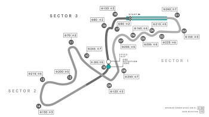
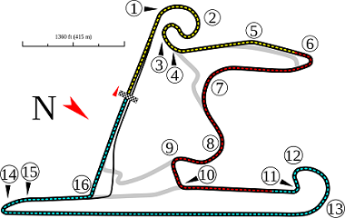
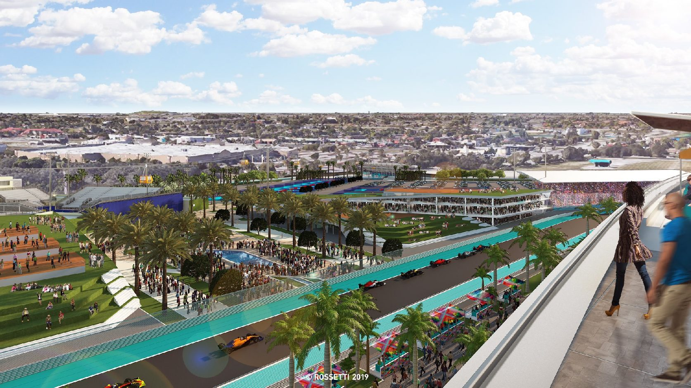

Forma 1 helyszínek 2024
Pályákról egy kis ismertetés
A Formula–1-es versenyeket zárt, szilárd burkolatú, külön erre a célra épített pályákon tartják. Egyes helyszíneket részben vagy egészben országúton, városi utcákon, parkokban, ritkán repülőterek kifutópályáján jelölik ki. Az országúti pályák jellemző képviselője Spa- Francorchamps, aminek egy részét közútként is használták egészen 2007-ig, amikor a buszmegálló-sikán átépítésével már a pálya egyik részét sem használják közútként. A leghíresebb városi pálya monacói, ahol 1955 óta minden évben rendeznek Formula–1-es nagydíjat. Az osztrák nagydíj zeltwegi, 1964-es futama a kevés repülőtéren tartott versenyek egyike.
>Az első állandó, de ma már nem üzemelő pálya 1907-ben épült Angliában, Brooklandsben, London délnyugati részén. A legrégibb, ma is működő épített versenypályát, az Indianapolis Motor Speedwayt 1909-ben adták át az Egyesült Államokban. A versenynaptárban jelenleg is szereplő pályák közül az olaszországi Milánótól nem messze található, 1922-ben épült Autodromo Nazionale di Monza a legrégibb.
Verseny pályák 2024
- Formula–1 bahreini nagydíj
- Formula–1 szaúd-arábiai nagydíj
- Formula–1 ausztrál nagydíj
- Formula–1 japán nagydíj
- Formula–1 kínai nagydíj
- Formula–1 miami nagydíj
- Formula–1 magyar nagydíj
{kind=link}
Az első bahreini nagydíjat 2004-ben rendezték a Bahrain International Circuiton, Szahírban. Ezt is a német Hermann Tilke tervezte. A pálya a sivatag közepén épült, az autóknak így problémáik lehetnek a nagy hőséggel, vagy a homokkal. A nagydíj dobogóján rózsavízzel ünnepelnek a versenyzők a pezsgő helyett, mivel az arab országban tilos alkoholtartalmú italt fogyasztani. A száraz verseny szinte garantált, hiszen itt egy évben összesen 3-5 napon esik. 2005-ben a Ferrari, 2006 elején a Toro Rosso, a Ferrari és a Honda is tesztelt is a pályán, mivel Bahreinben télen is meleg van, míg Európa nagy részén ilyenkor hideg és nedves az idő
{kind=link}
A szaúd-arábiai nagydíj (hivatalos nevén: Formula 1 STC Saudi Arabian Grand Prix 2024) a 2024-es Formula–1 világbajnokság második futama volt, amelyet 2024. március 7. és március 9. között rendeztek meg Dzsidda belvárosában.A 3. szabadedzés előtt a Ferrari bejelentette, hogy vakbélgyulladást diagnosztizáltak Carlos Sainznál és a hétvége további részében Oliver Bearman veszi át a helyét, aki ezen a versenyen debütál a Formula–1-be.
{kind=link}
A Formula–1 ausztrál nagydíj a Formula–1 egyik nagydíja, melyet 1985 óta rendeznek meg évente. Az első 11 évben Adelaide adott helyszínt a futamoknak, 1996 óta pedig a Melbourne-i Albert Parkban rendezik meg a versenyt. Az adelaide-i versenyek idényzárók voltak, két alkalommal dőlt el rajtuk az egyéni világbajnoki cím: 1986-ban Alain Prost javára a Williams pilótáival szemben, 1994-ben Michael Schumacher javára Damon Hill-lel szemben. A melbourne-i futamok többnyire szezonnyitók, így az utóbbi években a legtöbb pilóta itt futotta első versenyét.

{kind=link}
Az első japán nagydíjat (Fuji Television Japanese Grand Prix) 1976-ban rendezték meg a Fuji Speedwayen, mely Sizuoka prefektúrában található. A versenyeket 1987-től 2006-ig minden évben a Szuzukában rendezték meg. 1994-ben és 1995-ben Japánban két futamot rendeztek egy évben, hiszen a japán mellett a csendes-óceáni nagydíjat is ebben az országban rendezték, az Tanaka International Circuiton, Aidában. 2007-ben és 2008-ban ismét Fudzsiban rendezték meg a japán nagydíjat, majd 2009-től újra Szuzuka rendezi a nagydíjat. 2022-ben itt nyerte meg Max Verstappen második világbajnoki címét.
{kind=link}
A Formula–1 kínai nagydíjat (Sinopec Chinese Grand Prix) 2004 óta rendezik meg a Shanghai International Circuiton.Egy Formula–1-es nagydíj megrendezésének gondolata Kínában már az 1990-es évek elején felvetődött. Az akkori tervek szerint az ország déli részén levő Kuangtung tartománybeli Zhuhai-ban rendezték volna meg.2017 szeptemberében Chase Carey bejelentette, hogy 2020-ig meghosszabbították a kínai nagydíj rendezőinek szerződését a Formula–1-gyel.
{kind=link}
Az első miami nagydíjat 2022-ben rendezték a Hard Rock Stadium Circuiten, Miami városában. Miami városa 2018-ban nyújtotta be kérelmét, hogy ott tarthassák a versenyt. Az első futamot 2019-re tervezték. Miután komplikációk léptek fel a PortMiami építési és fejlesztési tervei miatt, kérelmet nyújtottak be, hogy 2021-ben a Hard Rock Stadiumban tarthassák a versenyt. Az esemény a 2022-es Formula–1 világbajnokság része. 2022-től kezdve tíz évig megrendezik a nagydíjat a Hard Rock Stadium környékén. A versenyt 2022 májusára tervezték.
A magyar nagydíj a Formula–1 egyik versenye, amelyet 1986 óta – megszakítás nélkül – rendeznek meg a Budapest melletti Mogyoród község külterületén található Hungaroring versenypályán. Előtte egy alkalommal, 1936-ban rendeztek Grand Prix versenyt a Népligetben, mely még nem volt hivatalos világbajnoki futam és nem is osztottak a verseny végén pontokat. Kisebb átalakítások után a pálya 2003-ban nyerte el jelenlegi vonalvezetését, amelynek hossza 4,381 kilométer. A verseny hossza 70 kör, vagyis a pilótáknak 306,67 km-t kell teljesíteniük, amely távot körülbelül 110 perc alatt lehet megtenni.